Close Register
WCPOS 2.0 web, end of shift. The pick is V1, a right-side sheet over the dimmed register: the counted cash leads, and Close register is pinned at the bottom. It scored highest on Codex in both rounds (r1 average 8.45, against 7.90 for V2 and 7.60 for V3). Anchors: none (no existing screen; no reference screens available).
Picked: V1, right-side sheet
Drawer short state: −$15.00, note written, Close enabled. Desktop at 1280 × 800, phone at 390 × 844. Follows your system theme.
These shots are the round-1 shots the scores were given on. Two edits were applied after the round cap and are not in them (see rounds.md): the first-ever close's subtotal reads "Before opening float", and on the phone "Leave in drawer $150.00" and "To bank $354.35" each stay on one line. variants/v1.html is the current drawing.

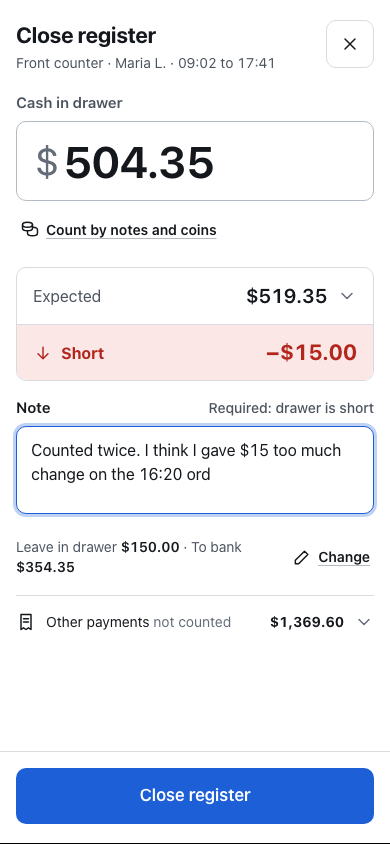
Light and dark

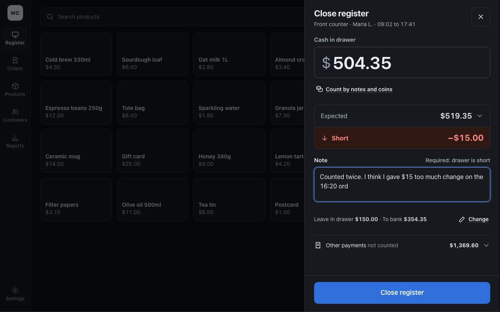
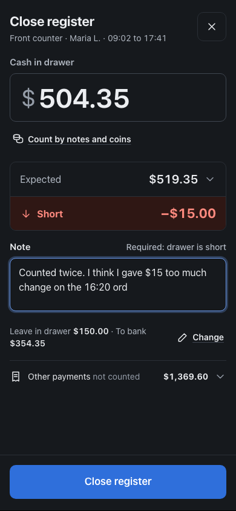
States
Each frame shows the sheet at 80%. The six frames, left to right:
- Drawer over: counted $522.55 against $519.35 expected, "Over +$3.20". The note is required and empty, so Close register is disabled with "Add a note to close" beside it.
- Drawer balanced: counted $519.35, "Balanced $0.00". The note is optional; Close register is enabled, one tap.
- First-ever close: the Expected breakdown is open with "Opening float: Not recorded" and the subtotal from sales only ($369.35); a "First close on this register" row offers "Enter opening float"; the difference row reads "Difference unknown · Opening float not recorded". Close register is enabled.
- Offline: a badge under the header reads "Offline · saves here, syncs when online"; the rest is the balanced state and Close register is enabled.
- Nothing counted yet: the amount field is focused and empty, the difference row reads "Not counted —", To bank is "—", and Close register is disabled with "Enter the counted cash" beside it.
- Closed: the sheet becomes "Register closed" with a check, "Saved to Reports › Closures at 17:43", the figures (counted, expected, short, to bank, left in drawer, other payments), and two buttons: Print closure slip, Done.
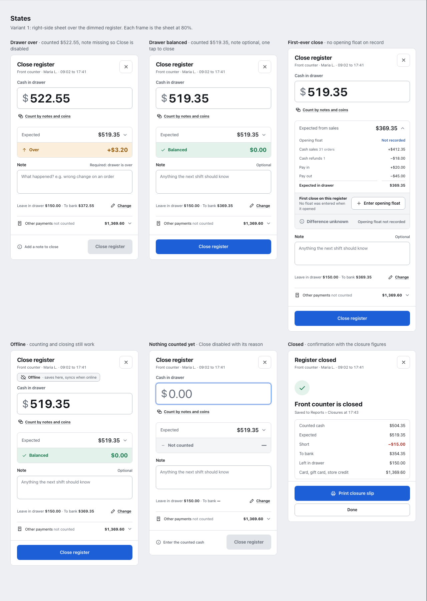
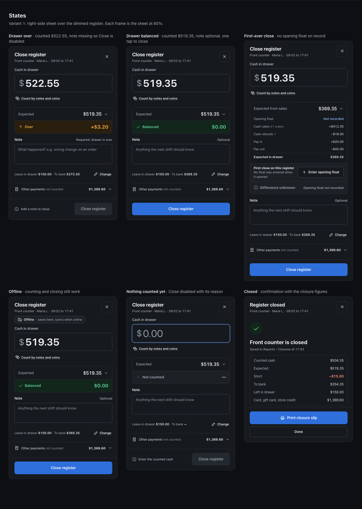
What changed between rounds
First-ever close: an unknown float is no longer shown as a discrepancy
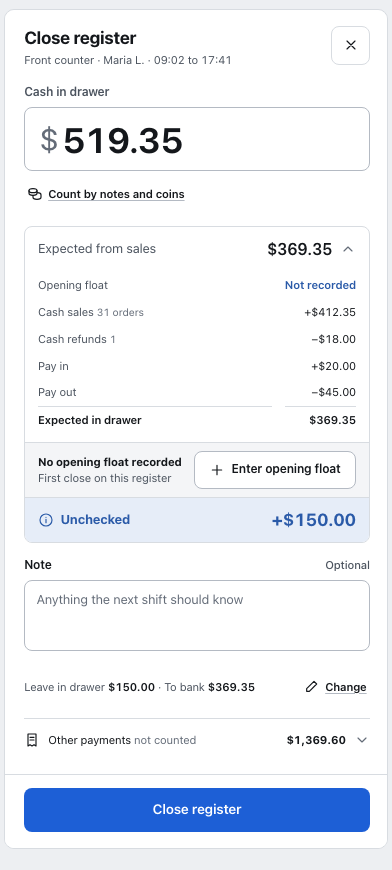
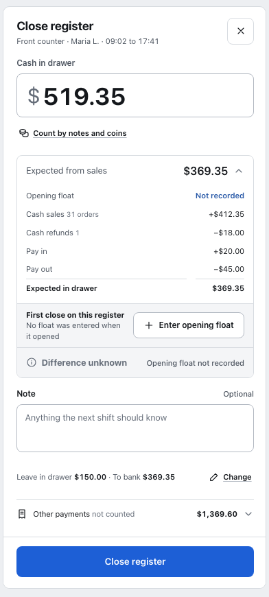
Offline: the badge says the closure syncs later
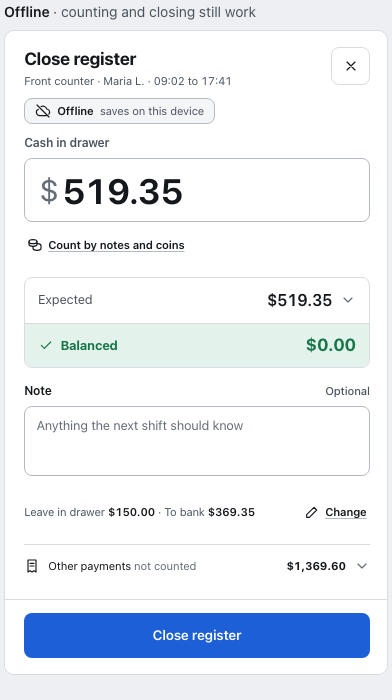
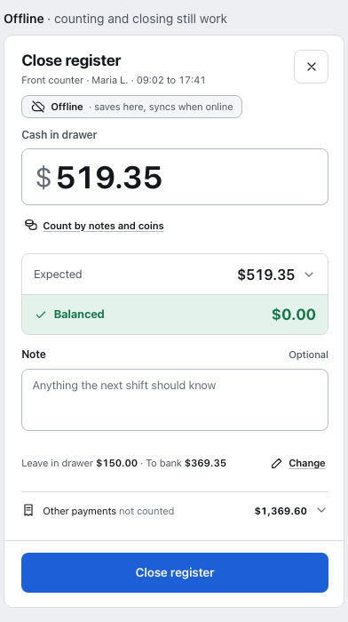
Rejected variants
V2: full-screen counting desk (r1 re-score 7.90)
Keypad on the left, expected, counted and difference on the right. The 68 px keypad stays the loudest thing on screen even while the note is focused, and "Count by notes and coins" sits below Close on the phone.
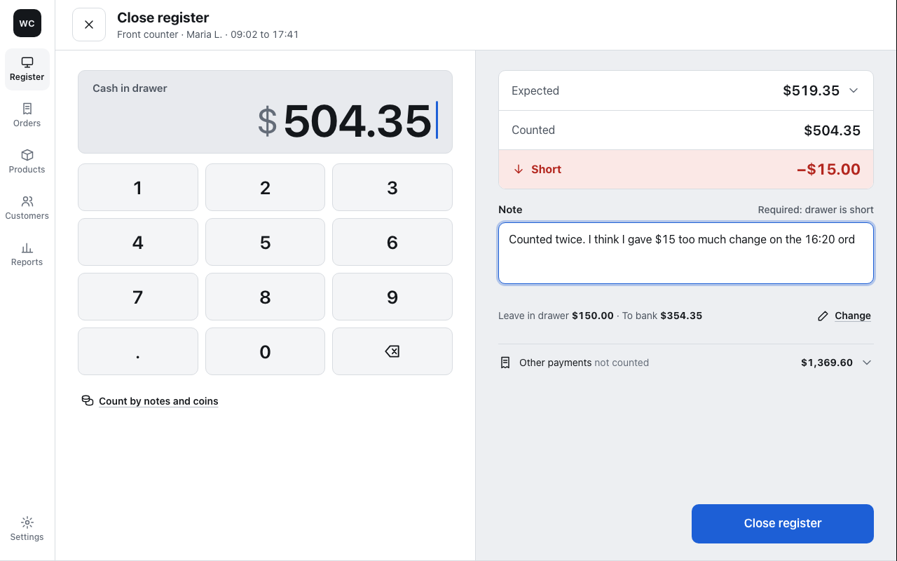
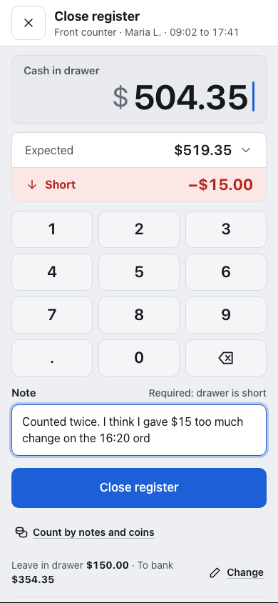
V2 states
Keypad on the left and the figures on the right in every frame; the same six states as V1, and in both disabled frames the reason sits under the keypad rather than beside the button.
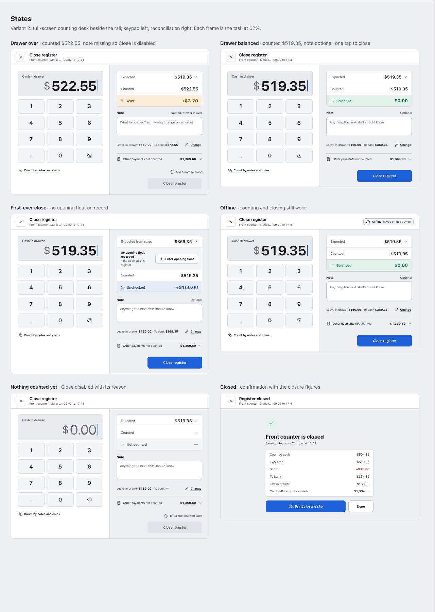
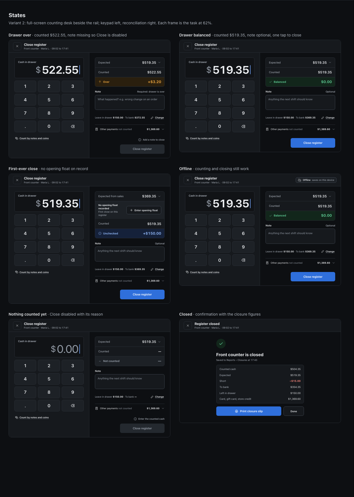
V3: the close as an equation (r1 re-score 7.60)
Counted − Expected = Difference, as three cards. Clear on desktop, but on the phone the float, the bank figure and the other payments drop out of view.
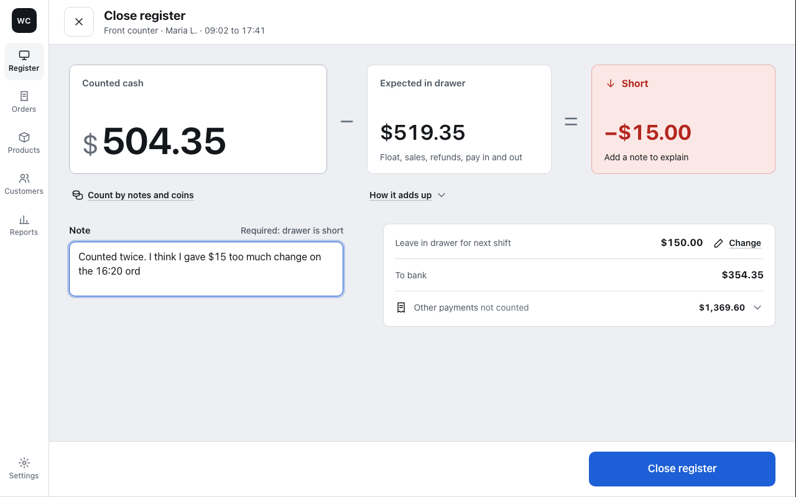
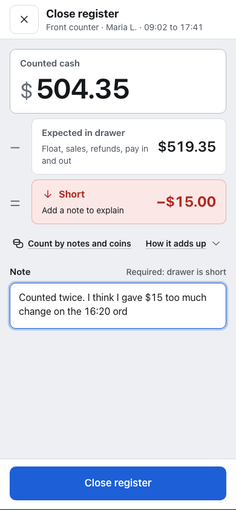
V3 states
Counted, Expected and Difference as three cards across the top in every frame; the same six states as V1, with the float and bank lines below the cards.
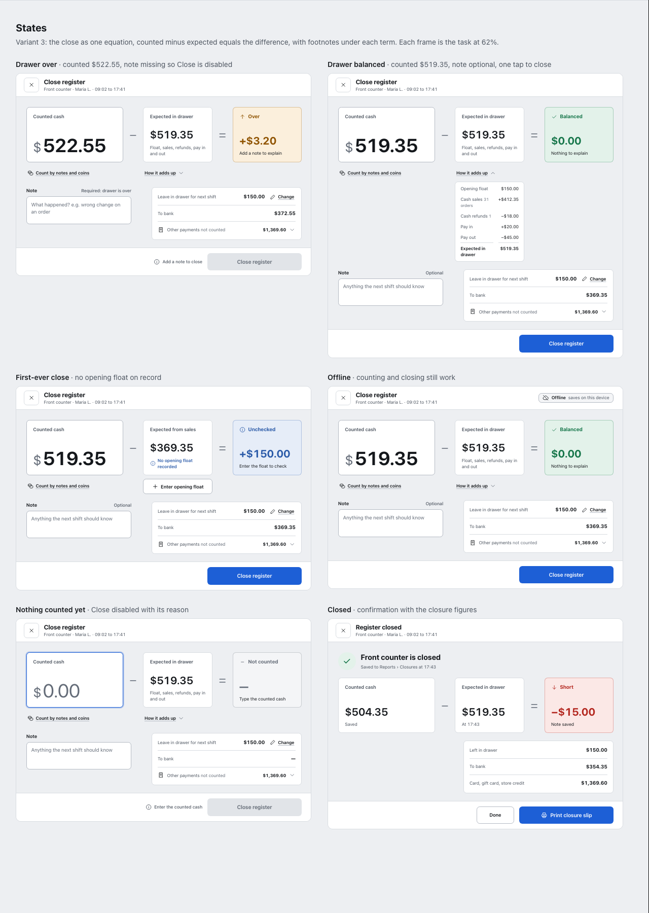
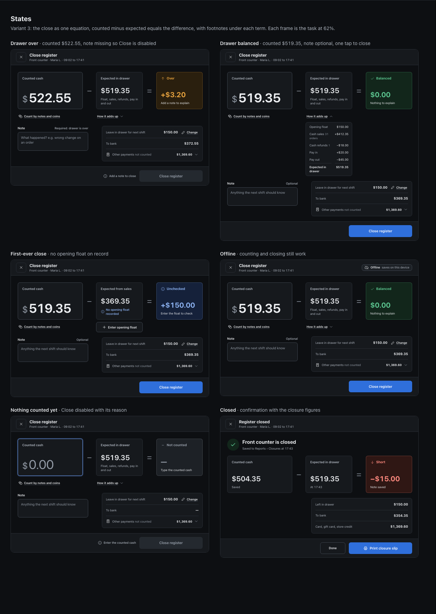
Scores
Round 1: V1 after fixes, with r0 re-scored on corrected shots
| Category | V1 · r1 | V1 · r0 baseline | V2 · r0 | V3 · r0 |
|---|---|---|---|---|
| Hierarchy | 8.5 | 8.5 | 8 | 7.5 |
| Typography | 8.5 | 8.5 | 8 | 8 |
| Spacing and alignment | 8.5 | 8.5 | 8 | 8 |
| Colour and contrast · light | 8 | 8 | 8 | 8 |
| Colour and contrast · dark | 8 | 8 | 8 | 8 |
| Iconography and indicators | 8.5 | 8.5 | 8 | 8 |
| Consistency | 8.5 | 8.5 | 8 | 7.5 |
| Clarity for the person in the brief | 8 | 7.5 | 7.5 | 7 |
| Density | 9 | 9 | 7.5 | 6.5 |
| States covered | 9 | 8 | 8 | 7.5 |
| Average | 8.45 | 8.30 | 7.90 | 7.60 |
Round 0: three variants (phone shots were centre-cropped by the shoot script, so spacing reads low for all three)
| Category | V1 · Side sheet | V2 · Counting desk | V3 · Equation |
|---|---|---|---|
| Hierarchy | 7.5 | 7 | 7.5 |
| Typography | 8 | 8 | 8 |
| Spacing and alignment | 4 | 4 | 4 |
| Colour and contrast (light) | 7.5 | 7.5 | 7.5 |
| Colour and contrast (dark) | 7.5 | 7.5 | 7.5 |
| Iconography and indicators | 7 | 7 | 7 |
| Consistency | 5 | 5 | 5 |
| Clarity for the person in the brief | 6 | 5.5 | 5.5 |
| Density | 8 | 6 | 5.5 |
| States covered | 8 | 8 | 8 |
| Average | 6.85 | 6.55 | 6.55 |
Judge: Codex (gpt-6-astra) only. Opus was never added, because no round had every category at 9.0. Stopped at the rounds=2 cap.